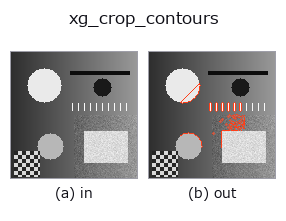

xldgeom op• 데이터 종류: contour → contour
• 호출: fullseye.apply(img, "xg_crop_contours", a=0.5, b=0.5)(2-D 는 이미지 1 장 + 스칼라 노브 2 개 a,b∈[0,1] 모델)

*그림은 128×128 합성 입력에서 실제로 실행한 출력. 왼쪽이 입력, 오른쪽이 출력. 점군은 위에서 본 산점도(밝기 = z), 1-D 열은 꺾은선, 볼륨은 z 방향 최대값 투영, 동영상은 가운데 프레임, 복소 영상은 진폭이며, 그림이 되지 않는 반환값은 값 자체를 표시한다.*
노브 a 를 훑기(0.1 / 0.5 / 0.9, 다른 노브는 기본값):
▸ xg_crop_contours: knob a sweep (docs site)
*노브 b 는 출력을 바꾸지 않는다(실측: 0.1 / 0.5 / 0.9에서 동일).*
단계(앞에 오는 op → 이 op, 왼쪽에서 오른쪽으로):
▸ xg_crop_contours: stages (docs site)
다른 영상에서도(합성 장면 / 사진 / 동전. 윗줄이 입력, 아랫줄이 그 출력. 노브는 기본값):
▸ xg_crop_contours: other inputs (docs site)
형상의 중앙 a 비율 창 안에 드는 contour 점만 남깁니다.
> 아래 상세 설명은 원문입니다 —— 요약과 제목은 번역되어 있습니다.
画像中心に置いた、高さ `a*H、幅 a*W` の矩形窓の内側にある輪郭点だけを
残す(`a は [0,1] に clip、b は未使用)。窓は行 [(0.5-a/2)H, (0.5+a/2)H]`、
列 `[(0.5-a/2)W, (0.5+a/2)W] の閉区間。H, W は辞書の shape` から取り、
無ければ全点の最大座標+1 で代用する。
返り値は `{"shape": (H, W), "cs": [...]}`。窓内に 1 点も残らない輪郭は捨て、
`a=0 では中心線上に正確に乗る点しか残らないためほぼ空、a=1` で全点が
残る。
注意: 窓に切られた輪郭は分割されない。残った点をそのまま 1 本の折れ線として
繋ぐので、輪郭が窓を出入りするたびに「窓の縁を飛び越える辺」が生まれ、
`xg_area_center` の面積や折れ線長が実際より大きく出る。切り口を正しく
扱いたいなら、領域の段階で `r3_clip_region` を掛けてから輪郭を取り直す。
座標は (row, col)。長さで輪郭ごと選別するのは `xg_clip_contours`。
• 샘플 데이터 카탈로그(DL URL / 라이선스) —— 2-D 는 skimage.data(BSD/public)+ 합성, 3-D 는 실데이터 소스(Stanford/PDS 등)의 DL URL.
• 연산자의 내력·참고문헌 —— 이 연산자 족의 바탕이 된 연구/기법의 출처.
• 알고리즘의 정전(저자·연도)과 용도는 위의 패밀리 사용 가이드에 적혀 있습니다.
아래 프로그램은 실제로 실행됨을 확인했습니다(그림과 같은 입력). Studio 도움말에서는 이 블록이 버튼이 되어 즉시 불러와 실행할 수 있습니다.
threshold 0.50 0.50 sk_find_contours 0.50 0.50 xg_crop_contours 0.50 0.50
▸ Load this pipeline · Load & run
• gallery2d_geometry — py -3.11 examples/gallery2d_geometry.py
contour 를 입력으로 받는 것)identity · select_contours · smooth_contours · fit_line_contours · contours_to_region · count_contours · total_length · select_contours_xld
xldgeom)xg_moments · xg_area_center · xg_eccentricity · xg_orientation · xg_elliptic_axis · xg_height_width_ratio · xg_regress_contours · xg_clip_contours
*Provenance: ops.py — 2D 연산자 레지스트리. 이 op 노트는 tools/opdocs.py md 가 자동 생성합니다(직접 편집하지 마세요).*
© 2026 Kazufumi Furuse — Fullseye operator documentation. Licensed under Apache-2.0.
{kind=link}
{kind=link}
{kind=link}